The presidential runoff of 25 October 2026 — do the numbers add up?
The tests do not establish evidence of manipulation
Eleven families of statistical diagnostics on all 499,248 sections, with the honest 2022 runoff and the 2026 first round on the same sections as controls, plus the election-night portal capture: no signal of the kind these methods read as manipulation; the self-test shows the battery would have seen it. The digit tests’ formal rejections repeat the first round’s structural artifact.
The first round’s transfer scenario called the runoff wrong — by 4.36 pp
51.79% for Lula against 48.21% for Flávio Bolsonaro: the first round’s runner-up won the runoff
The scenario using 2022 transfer rates predicted Bolsonaro 52.6%; the result shows that those assumptions did not carry over to 2026
What happened on 25 October 2026
The runoff of 25 October 2026: Lula (PT) against Flávio Bolsonaro (PL), the two leaders of the 4 October first round. The section-level export published by TSE on 26–27 October reconciles with the election-night portal capture to the exact vote: 499,248 sections, 128,236,074 ballots, zero failed self-consistency checks. The final portal update is timestamped 23:26 BRT, about six and a half hours after polls closed.
Runoff result
Election night: the lead flipped
- at 0.2% countedLula 58.6%
- at 29% countedBolsonaro 50.5%
- at 95% countedLula 51.7%
Turnout: 80.78%
- ballots cast128.2M
- registered voters158.7M
- blank + null votes3.2%
Governor runoffs the same day
- RN50.77% — margin 1.54 pp
- ES52.17%
- AC · AM · DF · TO57–66%
The runoff as a natural experiment
Three weeks separate a first round with 13 candidates and a runoff with two — the same 499,248 sections, fully matched. Aggregate section totals can estimate vote transfers between the rounds, but cannot identify how any individual voted.
The scenario missed by 4.36 pp
Applying 2022 transfer rates to the 2026 first round gave Flávio Bolsonaro 52.6% of the two-candidate vote. The actual runoff gave Lula 51.79%. The bootstrap interval (±0.03 pp) covered model resampling only; candidate mapping and changes in voter behaviour introduce additional uncertainty.
The scenario’s assumptions did not carry over — and the matrix says why
Fitting the same model on the actual 2026 pair of rounds decomposes the 4.36 pp miss: blank ballots alone account for −1.24 pp (in 2022 they went to neither candidate; in 2026 two thirds of them went to Lula), Cury’s voters −1.15 pp (27.9% of the mapped 2022 voters chose Lula; Cury’s own voters gave him 69.3%), null ballots −0.91 pp, and Lula’s base proved more loyal than its 2022 counterpart (98.9% vs 96.8%), another −0.87 pp.
Reporting order matters; the snapshots are sparse
Lula led at 1.56% counted, Bolsonaro at 28.66%, and Lula again at 95.33%. The snapshots bracket two lead changes but do not locate them exactly. The 11 reporting areas that first crossed 50% counted average 46.7% for Lula; the other 17 average 54.0%. These 28 areas include the Federal District and votes abroad.
Check · The scenario against the actual result
The round-1 analysis mapped 2026 candidates to 2022 vote categories by geographic similarity and carried the 2022 transfer rates over unchanged. The runoff is now a direct test of that scenario: every input came from the first round, the outcome from 25 October.
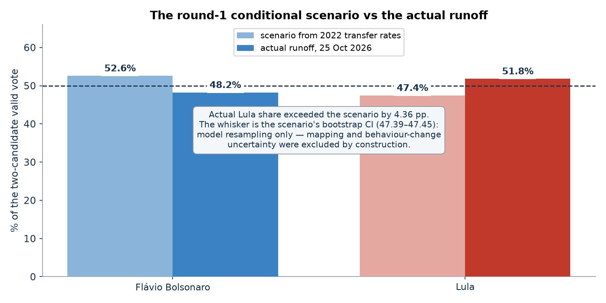
Estimate · Where the round-1 votes actually went
The same transfer model fitted directly on the 2026 pair of rounds — row-stochastic rates from each round-1 vote type to each runoff destination (NNLS on section totals, 80/20 cross-validation on held-out sections, 200-draw bootstrap). Held-out fit: r² 0.978, mean absolute error 3.1 votes per section. Both bases stayed locked (98.9% of Lula’s and 99.2% of Bolsonaro’s round-1 voters); Zema’s voters consolidated behind Bolsonaro (88.1%), while Cury’s broke for Lula (69.3%) — the decisive block of the runoff.
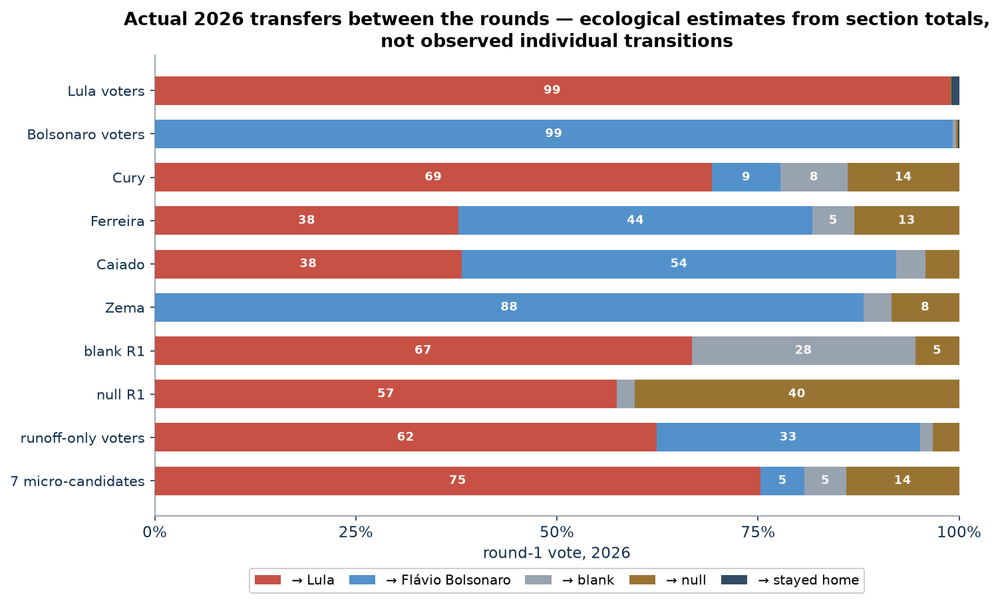
| round-1 vote | rates the scenario borrowed (2022) | actual 2026 rates (this model) | contribution to the 4.36 pp gap |
|---|---|---|---|
| Cury 3.45M | → Lula 27.9% | → Lula 69.3 / Bolsonaro 8.5 | −1.15 pp |
| Ferreira 2.68M | → Lula 27.9% | → Lula 37.8 / Bolsonaro 44.0 | −0.21 pp |
| Caiado 2.61M | → Lula 27.9% | → Lula 38.2 / Bolsonaro 54.0 | −0.22 pp |
| Zema 0.33M | → Bolsonaro 93.4% | → Bolsonaro 88.1 / Lula 0 | +0.04 pp |
| blank 2.30M | → neither (0%) | → Lula 66.7 | −1.24 pp |
| null 3.67M | → Lula 26.7% | → Lula 57.5 / stayed null 40.3 | −0.91 pp |
| runoff-only voters | → 48.1 / 47.3 (2022) | → Lula 62.4 / Bolsonaro 32.7 | — |
Counting · One evening, two leads
Thirteen portal captures were collected from 17:07 BRT on 25 October to 04:52 BRT on 26 October. They contain eight distinct national updates; the final update is timestamped 23:26 BRT on 25 October. Repeated captures of that final update are not additional counting steps.
The national ticker shows Lula at 58.59% with 0.21% counted, 52.16% at 1.56%, 49.54% at 28.66%, and 51.72% at 95.33%. State-level updates lag the national ticker early in the count, so the first swing cannot be reliably attributed to particular states or votes abroad. From the 1.56% snapshot onward, the state decomposition shows southern states pulling Lula’s share down and northeastern states pulling it back up. The sparse captures cannot establish a continuous, anomaly-free trajectory.
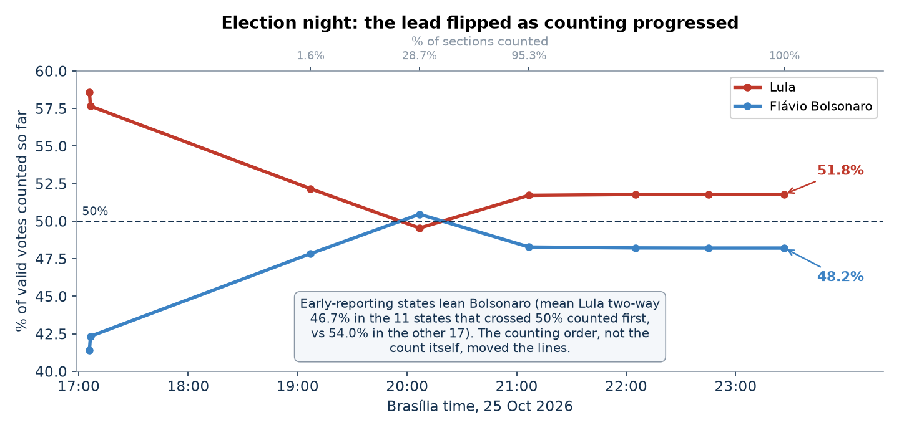
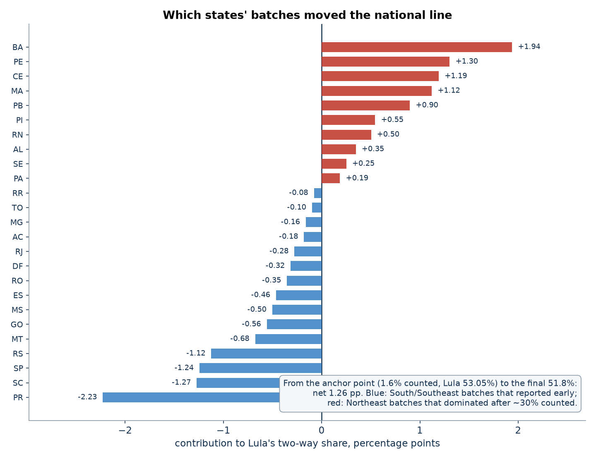
Manipulation detection test results
Eleven families of statistical diagnostics applied to the runoff section totals, with the honest 2022 runoff and the 2026 first round on the same sections as controls. Taken together they do not establish manipulation in the runoff counts; the tail, digit and correlation diagnostics stay inside the envelope the 2022 control sets. These diagnostics cannot certify an election as fraud-free.
•
Votes above a descriptive turnout threshold
The threshold of 92.5% is the runoff sample’s 99.5th turnout percentile. Sections above it contain 0.59% of ballots cast, including 0.71% of Lula’s and 0.46% of Flávio Bolsonaro’s votes. This is a descriptive tail count: it neither identifies fraudulent votes nor bounds their total.
The threshold of 92.5% is the runoff sample’s 99.5th turnout percentile. Sections above it contain 0.59% of ballots cast (749,738 voters), including 453,486 of Lula’s votes (0.71% of his total) and 275,583 of Bolsonaro’s (0.46%). This is a descriptive tail count: it neither identifies fraudulent votes nor bounds their total. A sample-defined percentile necessarily selects a small fraction of sections.
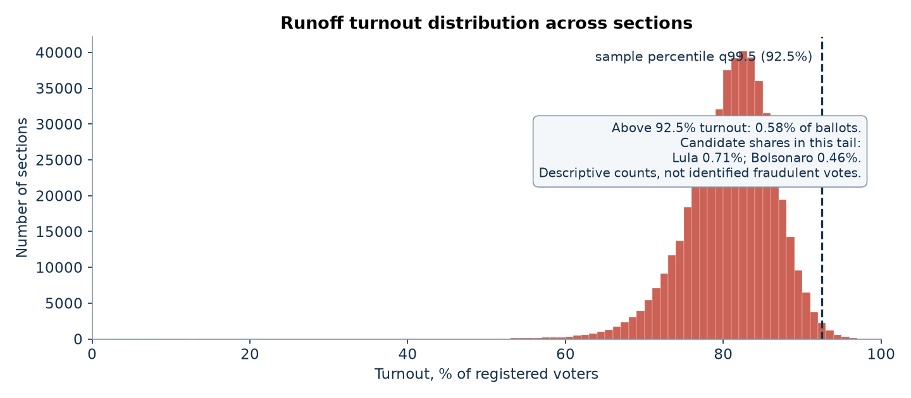
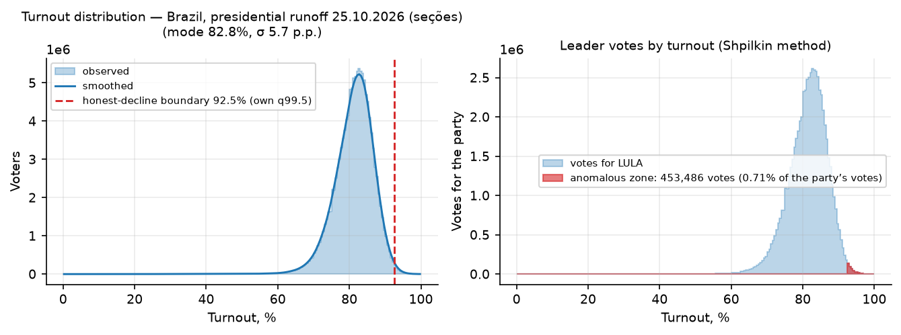
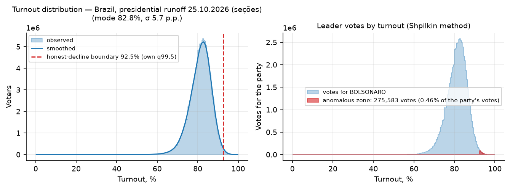
•
Turnout × result scatter (“comet tail”)
National weighted turnout–share correlations are +0.04 for Lula and −0.04 for Flávio Bolsonaro. Horizontal clouds, no rising tail. Neither a nonzero correlation proves fraud nor a near-zero value rules it out.
National weighted turnout–share correlations are +0.04 for Lula and −0.04 for Flávio Bolsonaro. Horizontal clouds, no rising tail. Neither a nonzero correlation proves fraud nor a near-zero value rules it out; geography and aggregation shape these relationships.
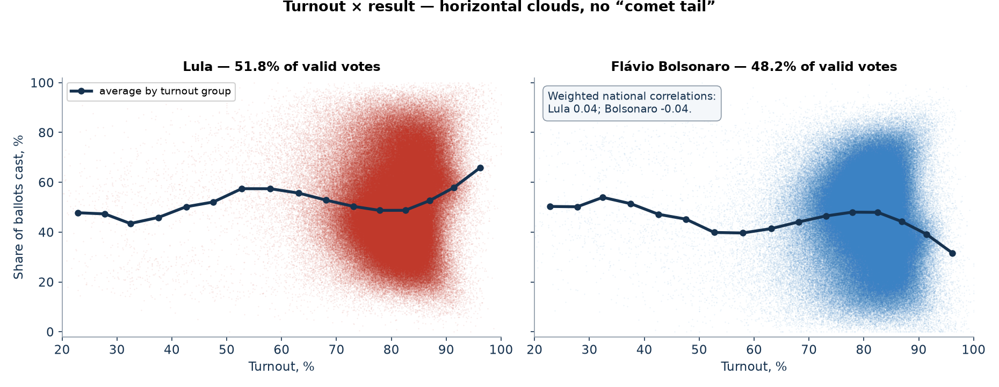
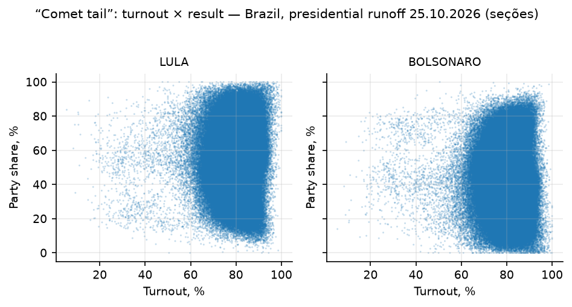
•
Election fingerprints (Klimek et al.)
A descriptive two-Gaussian mixture on (turnout × share) does not separate an anomalous cluster for either candidate: the second component sits at normal turnout (≈81%) on the opposite side of the same geography. No cluster in the high-turnout/high-share corner.
A descriptive two-Gaussian mixture on (turnout × share) does not separate an anomalous cluster for either candidate: Lula’s components sit at (79.9; 64.0) and (81.3; 41.3) with weight 0.61, Bolsonaro’s mirror the pattern. Both components are at normal turnout — the structure is the two-candidate split of the same regions, not an anomaly.
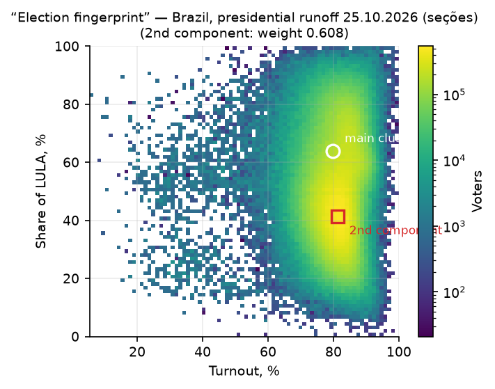
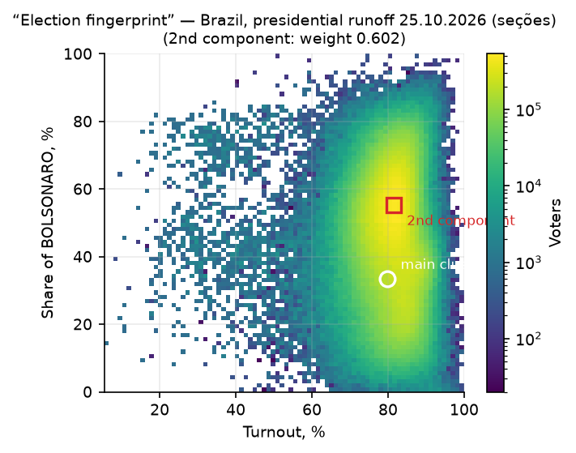
•
Round-number peaks (Kobak et al.)
Whole-percent turnout appears in 1.68% of sections against 1.70% expected under the size-adjusted random null (z = −0.8); the leader’s share: z = −1.0; at multiples of 5, |z| ≤ 1.6. In documented falsification cases this statistic reaches dozens.
Whole-percent turnout appears in 1.68% of sections against 1.70% expected under the size-adjusted random null (z = −0.8); Lula’s share landing on a whole percent: z = −1.0; at multiples of 5 — the stronger prior — |z| ≤ 1.6. In documented falsification cases this statistic reaches dozens.
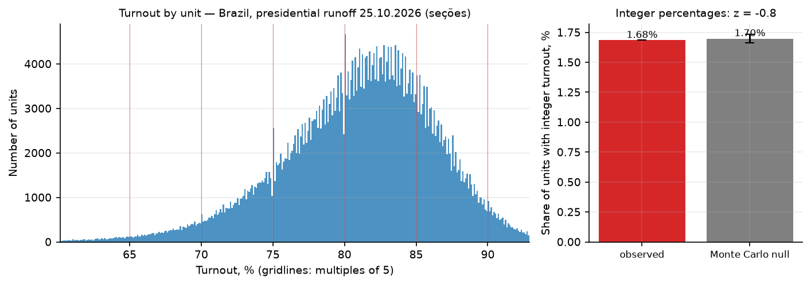
≠
Benford's second digit
The second-digit test rejects its reference distributions (max deviation 2.15 pp; p < 0.01) — the same formal rejection, with the same smooth monotone profile, as in the honest-2022-tested first round. Small counts and heterogeneous sections violate Benford assumptions; the rejection is structural, not a fraud signal.
The second-digit test on candidate counts rejects Benford’s expectation (max deviation 2.15 pp; theoretical p < 0.01 for both candidates; against the smooth-count Monte Carlo null Lula passes at p = 1.0, Bolsonaro sits at the null’s resolution floor). This repeats the first round’s finding on the same sections: with hundreds of thousands of small-count sections, tiny structural biases swamp the theoretical distribution. The smooth profile proves neither fraud nor its absence.
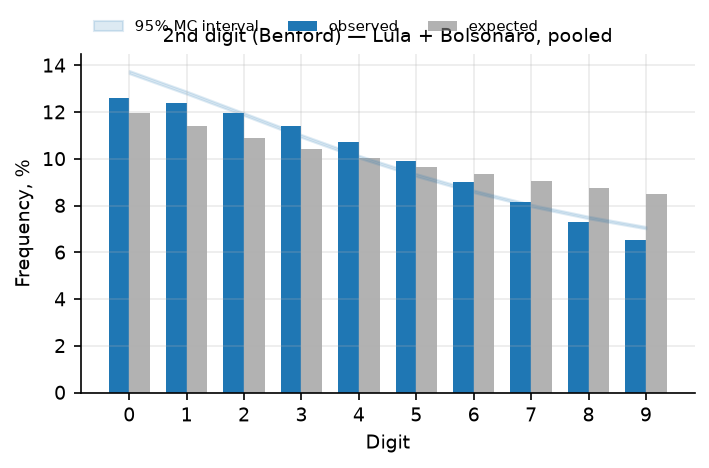
•
Last digit (Beber–Scacco)
Last digits of counts ≥ 100: maximum deviation 0.56 pp from uniform, combined excess of digits 0 and 5 at most 0.45 pp. A flat profile within noise — the formal chi-square rejections at this sample size again track structural artefacts, not hand-crafted numbers.
Last digits of counts ≥ 100: maximum deviation 0.56 pp from uniform (Lula 0.53, Bolsonaro 0.56), combined excess of digits 0 and 5 at most 0.45 pp — the opposite of the concentration psychological rounding produces. A flat profile within noise.
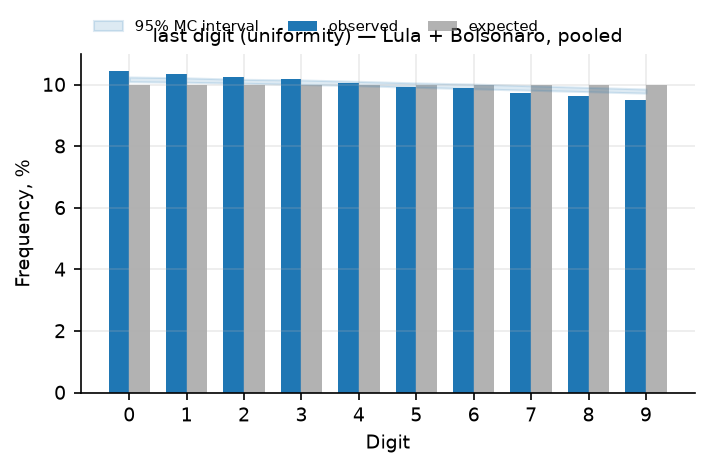
•
2D correlations by state (Kobak et al.)
State-level turnout–share correlations for Lula range from −0.48 to +0.23; Bolsonaro’s are the mirror image (vote shares sum to one). Heterogeneous geography, the same pattern the first round and 2022 show — these correlations alone do not distinguish mobilisation from manipulation.
State-level turnout–share correlations for Lula range from −0.48 to +0.23; Bolsonaro’s are the mirror image (vote shares sum to one). The same spread the first round showed on these sections; nationally the correlation collapses to ≈0.
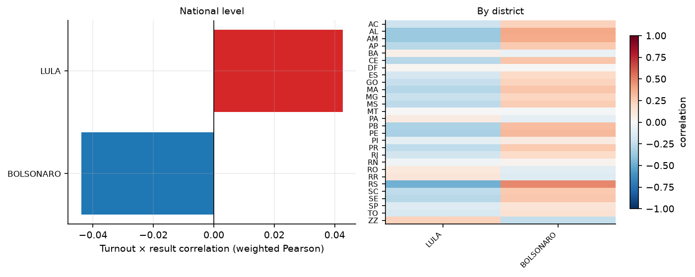
•
Outliers vs neighbours, Isolation Forest, duplicate protocols
The within-municipality outlier rule flags 5,018 sections (1.005%) — the same baseline rate as the first round (0.93%) and the honest 2022. Isolation Forest flags 4,993 (~1% by its configured threshold). Duplicate identical result vectors: 2,348 rows in 1,172 groups — with a two-candidate race, small sections coincide naturally; the largest group holds 3 sections. Flags are audit candidates, not findings.
The within-municipality outlier rule (robust z of turnout and share, |z|>4) flags 5,018 sections (1.005%) — the baseline level this rule produces on clean data of this size, in both directions. Isolation Forest flags 4,993 (1% by construction). Duplicate identical result vectors: 2,348 rows in 1,172 groups, maximum group size 3 — in a two-candidate race many small sections share the same (voters, Lula, Bolsonaro, blank, null) vector by chance. Flags require contextual investigation; neither a flag nor its absence settles whether a section was manipulated.
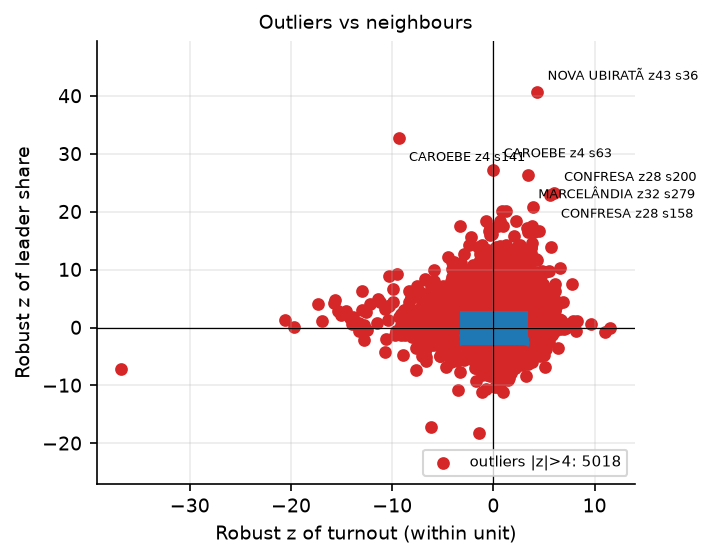
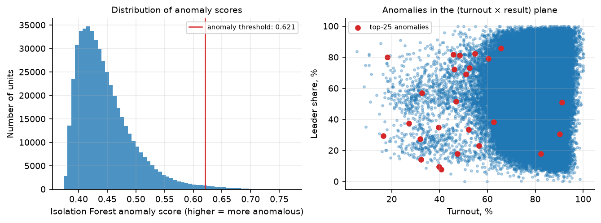
•
Voting-machine generations (urna models)
Four ballot-machine generations carried the runoff. The two-candidate split stays within 51.5–53.8% for Lula across generations with at least 4M registered voters; the oldest fleet (UE2013, 2.7% of the electorate) runs highest for Lula — deployment geography and electorate composition confound the comparison, so unadjusted differences neither establish a machine effect nor certify machine security.
Four ballot-machine generations carried the runoff: UE2013 (12,455 sections), UE2015 (87,500), UE2020 (200,504), UE2022 (198,746). Two-candidate Lula share: 53.8% / 52.0% / 51.5% / 51.8% respectively — the newest machines are not the most pro-government, and the spread tracks the generations’ geographic deployment. Unadjusted differences neither establish a machine effect nor certify machine security.
•
Controls: the 2022 runoff and round 1 on the same sections
The 2022 control’s own boundary (91.5%) nearly coincides with the runoff’s (92.5%). Runoff tails at the control boundary: 1.37% of Lula’s and 0.95% of Bolsonaro’s votes, against the honest 2022 runoff’s own 0.57–0.62%. Between the 2026 rounds turnout rose a median +1.91 pp with jumps of both directions (5,156 down / 409 up); four years apart, same stage: median +1.14 pp, 0.78% flagged. Nothing separates 2026 from its controls.
The 2022 control’s own q99.5 boundary (91.5%) nearly coincides with the runoff’s (92.5%): the turnout distribution did not change shape, it shifted up with the +1.86 pp turnout. Runoff tails at the stricter control boundary: 1.37% of Lula’s and 0.95% of Bolsonaro’s votes — against the honest 2022 runoff’s own tails of 0.57–0.62% at its own boundary. Matched-section jumps: 2026 R1→R2 median Δturnout +1.91 pp, symmetric dispersion, 1.12% flagged |z|>4 in both directions (5,156 down / 409 up — a stuffing signature would skew the opposite way); 2022-R2→2026-R2 median +1.14 pp, 0.78% flagged (2,864 up / 754 down), swing uniform across turnout deciles. Similarity is descriptive evidence, not proof of absence of manipulation.
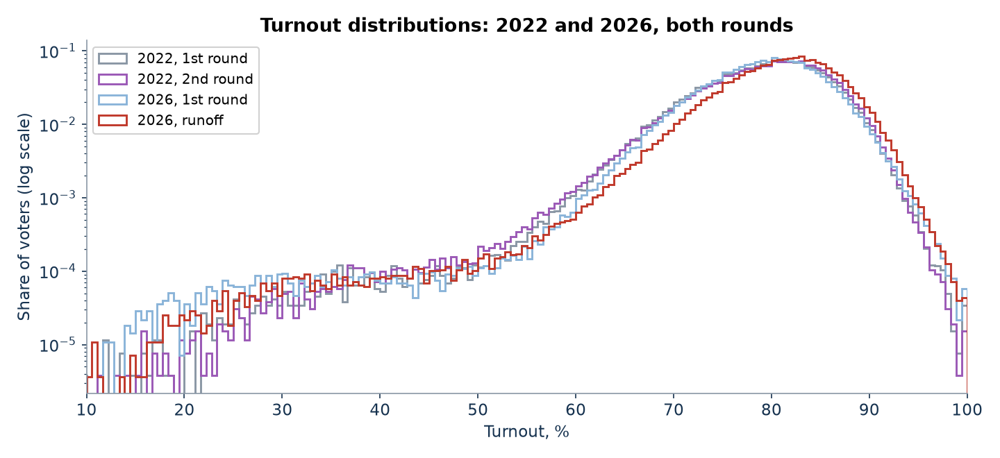
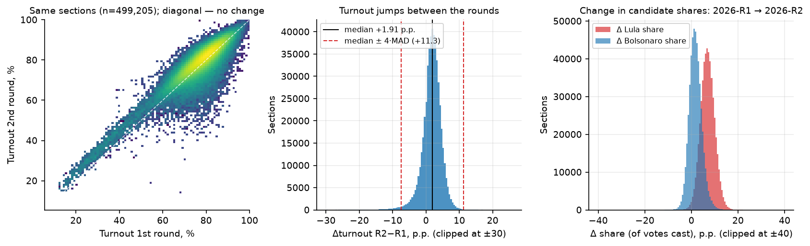
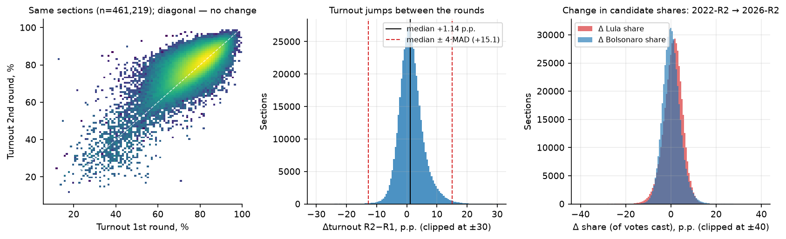
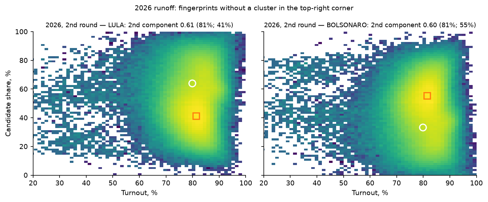
•
Sensitivity to two synthetic perturbations (self-test)
Injecting 1.87M synthetic ballots for the leader (10% of sections) grows the tail statistic 15.5-fold; “painting” turnout to whole percentages in 5% of sections moves the peaks statistic from z = −0.65 to z = 9. The battery demonstrably sees the mechanisms it looks for on this very data.
Injecting 1,870,878 synthetic ballots for the leader under the specified scheme (10% of sections, above-threshold) grows his tail votes from 453,486 to 7,048,037 — a 15.5-fold signal. “Painting” turnout to whole percentages in 5% of sections (24,772 sections) moves the integer-peaks statistic from z = −0.65 to z = 9.0. These experiments demonstrate sensitivity to those specific mechanisms and parameters, not to every manipulation of comparable size.
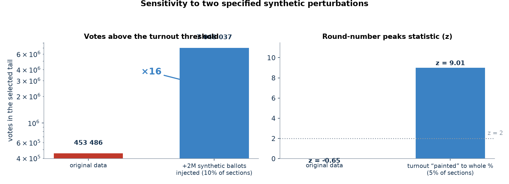
Scope and limitations
This is an analysis of published aggregate results, not a procedural audit of voting machines or ballot handling. The 2022 comparison is a reference election, not a known fraud-free ground truth. Statistical non-detection does not prove absence of manipulation; test assumptions, spatial dependence and multiple comparisons matter — the digit tests’ formal rejections are the standing example. Aggregate transfer estimates do not identify individual behaviour — a section-level split does not establish who any voter supported, and good aggregate fit does not validate individual rates. The intraday capture is sparse (13 snapshots) and its early per-state table lags the national ticker.
Data & reproducibility
- Runoff section dataset (published by TSE 26–27 October): 499,248 sections, all self-consistency checks zero, every headline total — ballots, blank, null, both candidates — matches the independent election-night portal capture to the exact vote. First-round section dataset and the 2022 control: the TSE open-data portal.
- 64,256,232 + 59,826,041 valid votes, 1,430,496 blank and 2,723,305 null sum to 128,236,074 ballots cast (turnout 80.78% of 158,745,502 registered). The 13 election-night snapshots and their per-state decomposition are archived alongside the section files.
- Toolkit: open-source election-forensics pipeline (Python, pandas / scikit-learn) implementing Shpilkin, Klimek, Kobak, Beber–Scacco, neighbour-outlier and Isolation-Forest methods, urna-model stratification, the 2022/round-1 controls and synthetic self-tests.
- The project repository contains the capture, scripts, figures and the full technical report for the runoff.
- See the first-round analysis and PARADOXES.md for the modelled 2022 transfers, the conditional scenario and its validation against this runoff. Interpret the outputs with the limitations above.